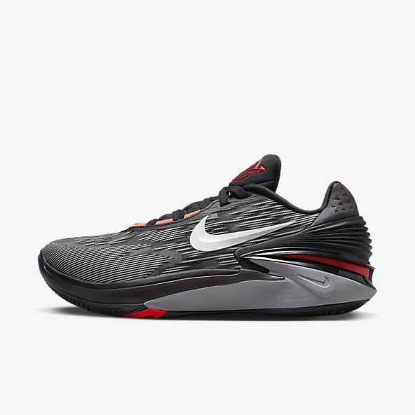
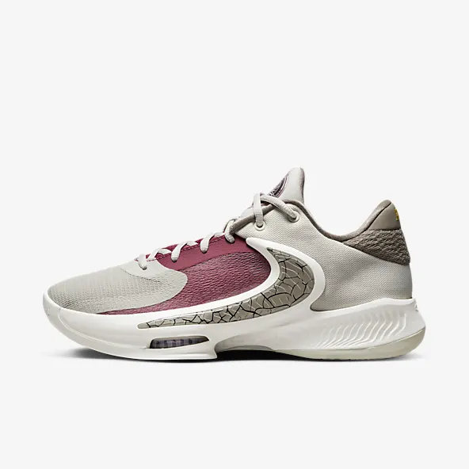

Nike Air Zoom G.T. Cut 2

Air Jordan XXXVI Low Luka PF

Fumo Plush doll characteris Cirno e ludo video " Formam diaboli coccineam". SCP-6959 nullas habet differentias aestheticas discerni ab aliquo pupa officina officinam praeterquam quod tag careat. Factio obiecti in materia prorsus aliena consistit, ostendens omnes notas hypothesatas cum substantia coniunctas. Nunc notum est quomodo SCP-6959 ad suam apparentiam venerit; investigatio de origine sua in spatio et quomodo in occursu cum Terrae permanenti factum est.
est mediocris glacies, quae primum apparuit in secundo gradu Embodiment Diaboli coccinei. Tamquam mediocris, prae genere suo praevalida est, cum potentia alicuius infirmi youkai congruens. Tamen, cum plerisque Gensokyo habitantibus, admodum infirma est. Persona eius puerilis est et ab aliis characteribus aliquando idiotica consideratur. Illa stellas sicut primas primas Magnae Fairy Wars, et una ex pluribus protagonistis in Touhou Hisoutensoku et stella occulta in quattuor temporibus.
Amabo, mea dulcis Ipsithilla, meae deliciae, mei lepores, iube ad te veniam meridiatum. et si iusseris illud, adiuvato, ne quis liminis obseret tabellam, neu tibi libeat foras abire; sed domi maneas paresque nobis novem continuas fututiones. verum, si quid ages, statim iubeto: nam pransus iaceo et satur supinus pertundo tunicamque palliumque.